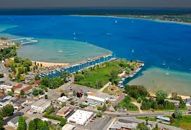
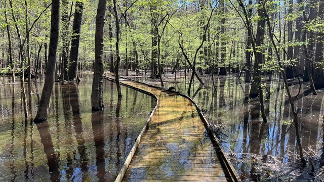

Emerald Bay State Park
Emerald Bay State Park
This national landmark is one of California's most popular state parks, famous for beautiful hiking trails with breathtaking views perfect for photography for all. Located near Lake Tahoe, Emerald Bay has had an influx of reports showing significant levels of microplastics located in and around the lake.Lake Tahoe has high concentrations of microplatics that feeds into surronding waterways, contaminating the surronding area.
Suttons Bay
Suttons Bay The Suttons Bay area is a popular tourist attraction featuring attractions such as local wineries/breweries, booming cherry industry, and local festivals. Being on the coast of Grand Traverse Bay, plastic from the lakes infiltrates the inlet and causes pollution issues in the area. Microplastics are invading the food chain and causing detrimental impacts on aqautic life.
Congaree National Park
Congaree National Park Congaree National Park offers many unique features for the area including an old growth forest, wetland areas, a large varity of diverse plants and animals, and much more. Congaree is recognized by the Audubon Society as an Important Bird Area. It is crucial for preserving the natural landscape, and diverse selection of plants and animals.Enviornmental containiminations are seeping into the ecosystem and impacting all forms of life in the park.